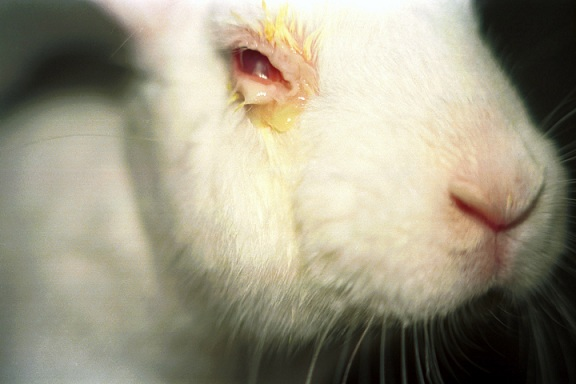
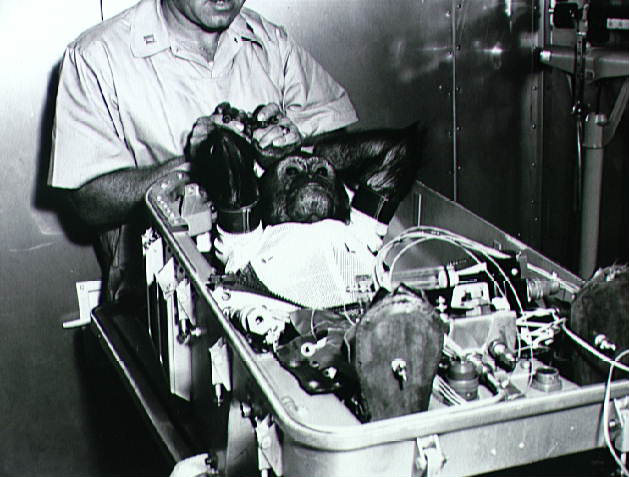

The research on animals is conducted inside universities, medical schools,pharmaceutical companies, farms and defence establishments that provide animal-testing services to industry. A number of scientists, animal welfare and animal rights organistions-such as PETA and BUAV-question the legitimacy of it, arguing that it is creul, poor scientific practice, poorly regulated, that medical progress is being held back by misleading animal models, that some of the tests are outdated, that it cannot reliably predict effects in humans, that the costs out-weigh the benefits,or that animals have an intrinsic right not to be used for experimentation.Thus, I strongly discourage the usage of animals in the field of science.
Given below is a table of animals used in science:
| Animal pictures | Their usage |
|---|---|
| A dog surgically implanted with saliva catch container | |
 |
A rabbit during Draize test |
 |
A monkey before getting launched into Earth orbit |